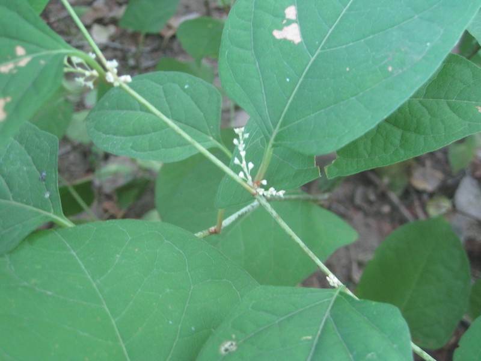
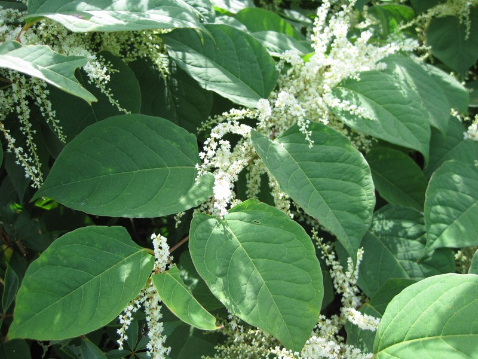
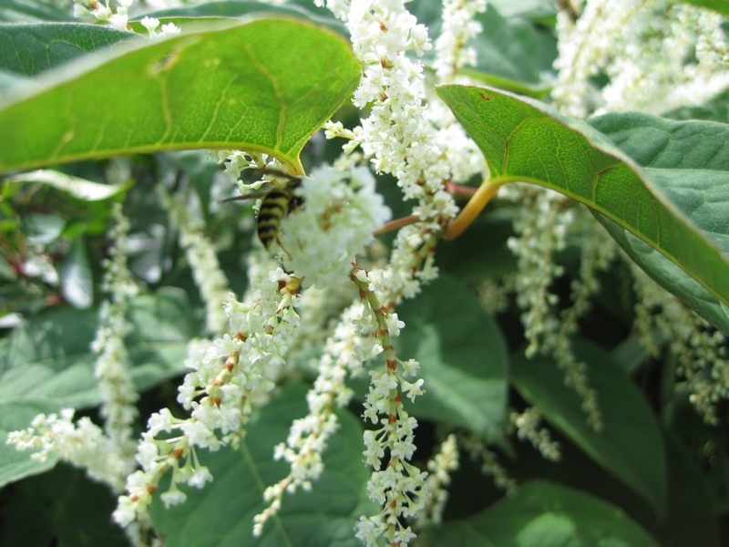
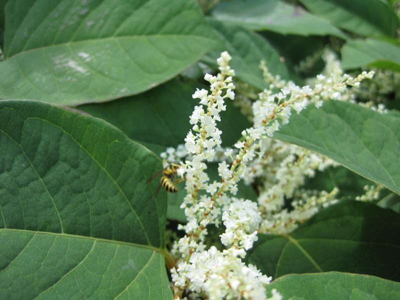
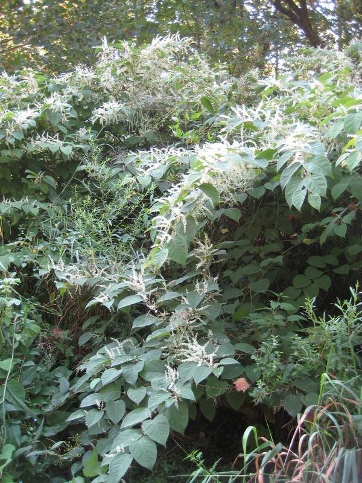

photo: Cleveland Metroparks
Japanese Knotweed (Polygonum cuspidatum)
Cleveland Metroparks |
Cleveland Metroparks |
Cleveland Metroparks |
Cleveland Metroparks |
Cleveland Metroparks |
{kind=link}
{kind=link}
{kind=link}
{kind=link}
{kind=link}
Form:
Arching herbaceous perennial, up to 10' tall. Hollow, reddish, bamboo-like stems are smooth and stout, often persisting after plant dies back to the ground each year. The base of the stem above each joint is swollen and surrounded by a membranous sheath.
Leaves:
Alternate, egg-shaped to almost triangular, 4-6" long, 3-4" wide. Dark green on upper surface, and pale green on lower surface.
Flowers:
Branched inflorescences of tiny, creamy white or greenish flowers emerge from leaf axils, near the end of stems. Bloom in late summer.
Fruits & Seeds:
Small, winged, triangular fruits carry very small, shiny seeds.
Roots:
Grow up to 6' deep. Spreads rapidly via long, stout rhizomes, which can reach 65' or more from parent plant.
Similar Species:
Giant knotweed (P. sachalinense) non-native
Tier 4 - Widespread and Abundant
These are known problem species throughout Cleveland Metroparks and are currently under active management. Management plans are set using population extent and site-specific information.
Action: These plants should be recored as present or absent. These species are known to be widespread and abundant throughout Cleveland Metroparks.